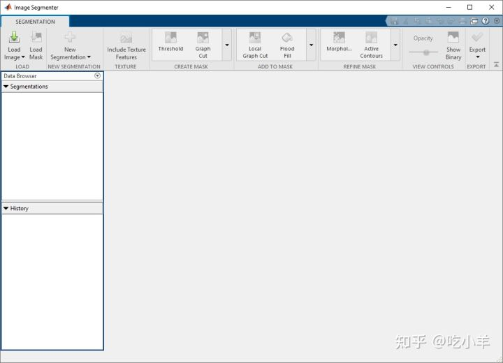
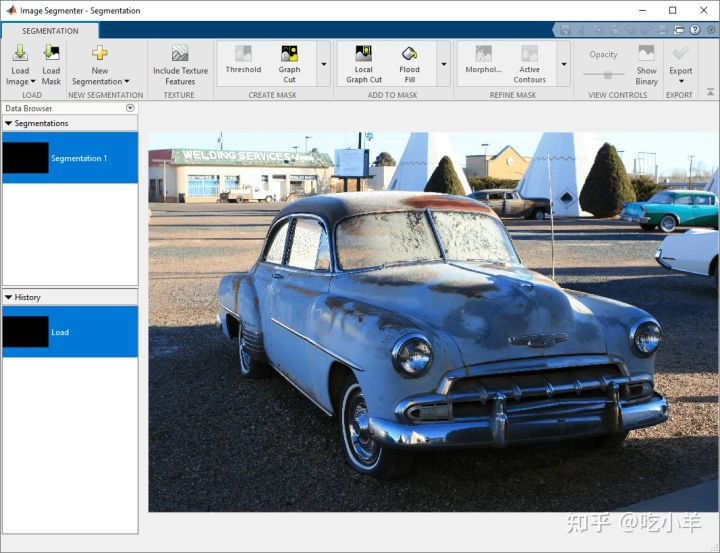
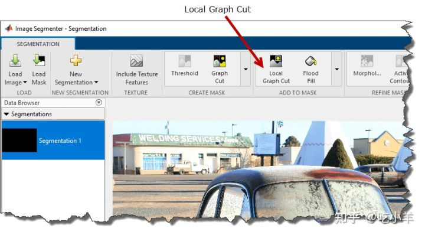
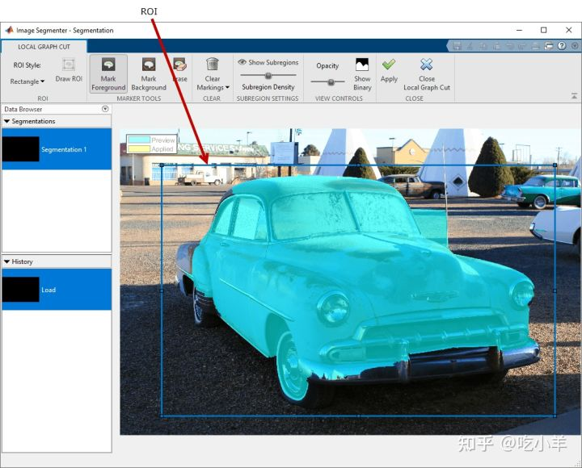
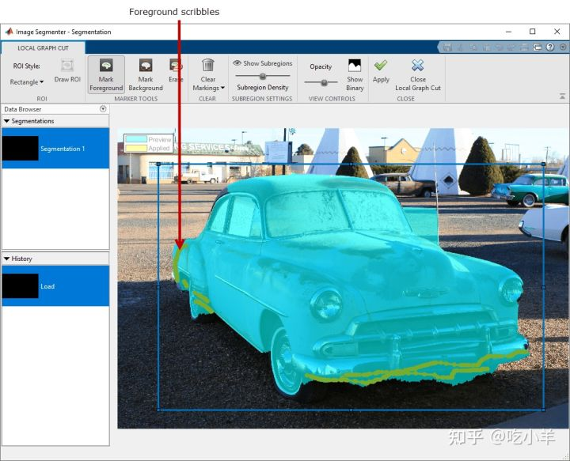
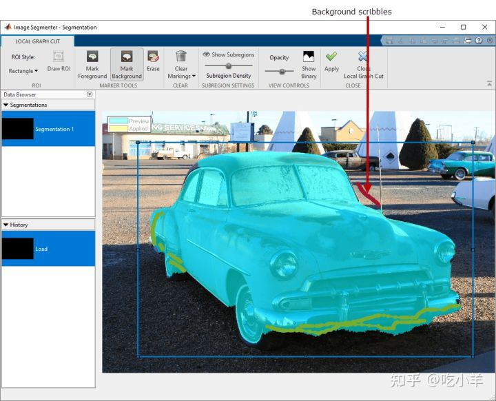
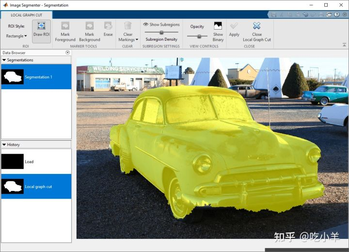
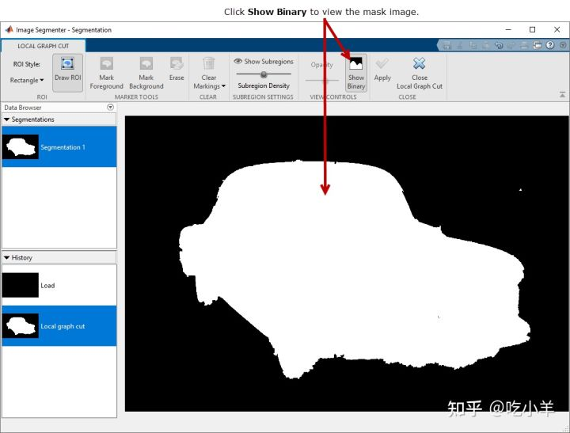

Home
本示例展示了如何在Image Segmenter应用程序中使用 Local Graph Cut（也称为grabcut）来分割图像。与 Graph Cut 一样，Local Graph Cut 是一种半自动分割技术，可用于将图像分割为前景和背景元素。使用 Local Graph Cut，您首先在要分割的对象周围绘制一个感兴趣区域。所述Image Segmenter应用程序段中的图像自动基于ROI的内容。
然后，与 Graph Cut 一样，您可以通过在 ROI 内的图像上绘制线条（称为scribbles ）来优化自动分割。您绘制的线条标识了您在前景中想要什么以及在背景中想要什么。Local Graph Cut 选项仅分割 ROI 边界内的元素。
Local Graph Cut 技术与Graph Cut 技术类似，将图论应用于图像处理以实现快速分割。该算法创建图像的图形，其中每个像素都是由加权边连接的节点。像素相关的概率越高，权重就越高。该算法沿弱边缘进行切割，实现图像中物体的分割。有关 Graph Cut 技术的信息，请参阅相关文章。
将图像加载到图像分割器应用程序中
将图像读入工作区。
car = imread('car2.jpg');
从 MATLAB® 工具条中，打开Image Segmenter应用程序。在应用程序选项卡上的图像处理和计算机视觉部分，单击Image Segmenter图标


在应用程序工具条上，单击加载，然后选择从工作区加载图像。在从工作区导入对话框中，选择您读入工作区的图像。Image Segmenter会显示您所选择的图像。

还可以使用以下命令imageSegmenter，在Image Segmenter应用程序中打开图像：
imageSegmenter(b);
使用 Local Graph Cut (Grabcut) 来分割图像
在Image Segmenter应用程序工具条上，选择Local Graph Cut。

Image Segmente应用打开本地图割分割一个新的选项卡。作为 Local Graph Cut 分割的第一步，在要分割的图像中的对象周围绘制一个 ROI。当Image Segmenter应用程序打开 Local Graph Cut 选项卡时，它会预选Draw ROI按钮。将光标定位在图像上并绘制一个包含要分割的整个对象的 ROI。要获得良好的初始分割，请确保您绘制的 ROI 完全围绕对象，并在对象和 ROI 边界之间留出少量空间。确保要分割的对象完全在 ROI 内。
您可以选择绘制矩形或多边形 ROI。使用ROI Style菜单进行选择。要绘制矩形，请将光标放在图像上，然后单击并拖动。要绘制多边形，请单击并拖动鼠标，每次单击都会创建一个顶点。双击完成多边形。如果您对绘制的形状不满意，可以随时对其进行编辑。右键单击 ROI 并选择删除。
完成 ROI 后，Image Segmenter应用程序会自动分割ROI 中的对象。蓝色阴影表示分割区域。

要优化自动分割，请绘制线条（scribbles）以标记未包含在自动分割中的前景的任何部分。绘制 ROI 后，图像分割器会自动选择标记前景按钮。

要从分割中移除不属于前景的区域，请将这些区域标记为背景。选择“标记背景”选项并在 ROI 内绘制线条以识别应在背景中的分割部分。

当您对分割感到满意时，单击应用。所述Image Segmenter应用程序改变图像为黄色的分段部分的颜色。

查看二进制图像并保存蒙版
要查看蒙版图像，请单击Show Binary。您还可以在主分割选项卡中查看二值蒙版图像。要返回主 Image Segmenter 应用程序，请单击Close Local Graph Cut。

完成图像分割后，您可以使用“导出”选项保存二进制掩码。您还可以获得用于分段的代码。
======================================================================
我的测试结果及程序
下面是我测试的代码：

注：本文根据MATLAB官网内容修改而成。